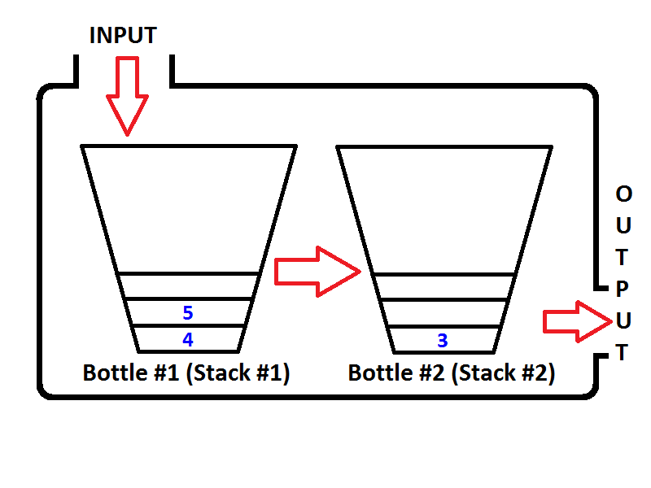

Copyright ©2018. All rights reserved. Created by CoDev
Η Queue with 2 Stacks είναι μία απλή queue, που όμως υλοποιείται με πολύ περίεργο τρόπο. Αντί να την χτίσουμε άμεσα, χτίζουμε 2 stacks, και με operations πάνω σε αυτές προσομοιώνουμε την queue. Ποιο το κέρδος; 
Ας συζητήσουμε δύο προβλήματα. Και στα δύο ζητείται να υλοποιήσουμε μία queue, στο πρώτο ζητείται απάντηση στο ερώτημα: "Ποιο το άθροισμα των αριθμών μέσα στην queue;", ενώ στο δεύτερο: "Ποιος ο μέγιστος κοινός διαιρέτης (GCD) των αριθμών μέσα στην queue;". Το πρώτο μπορεί να λυθεί με μία τυπική queue. Όταν εισάγουμε αριθμό, απλώς τον προσθέτουμε στο υπάρχον άθροισμα, ενώ όταν εξάγουμε, τον αφαιρούμε από το άθροισμα. Στο δεύτερο πρόβλημα όμως δεν υπάρχει τρόπος να αφαιρέσουμε, δεν υπάρχει δηλαδή πράξη που να αναιρεί την εφαρμογή του GCD.
Με τη δομή αυτή υποστηρίζουμε τις πράξεις που δεν έχουν αντίστοιχη πράξη αναίρεσης, σε μια queue. Αυτό γίνεται επειδή σε μία stack, αφού φεύγει το κορυφαίο στοιχείο, δε χρειάζεται να υπολογίσουμε την πράξη για τα εναπομείναντα στοιχεία. Mπορούμε απλώς να θυμόμαστε την απάντηση από τη χρονική στιγμή πριν μπει το στοιχείο που αφαιρέθηκε. Σε μία stack προφανώς υπάρχει τέτοια στιγμή, ενώ σε μία queue όχι (γιατί;).
Αναλυτικότερα διαβάζουμε θεωρία από εδώ. Όλες οι λειτουργίες υποστηρίζονται σε amortized O(1) χρόνο.
Ας σημειώσουμε ότι με τη δομή αυτή μπορούμε να λύσουμε όλα τα προβλήματα που λύνουμε με μία PQA, αλλά και πολλά ακόμα. Ενδιαφέρον έχει ότι ο κώδικάς της (όπως και ο κώδικας της PQA) είναι απλούστατος.
Υποσημειώσεις (πλήρως άχρηστες για διαγωνισμούς): Όσα αναφέραμε μπορούν να επιτευχθούν και σε worst-case O(1) χρόνο, με μία απλή τεχνική του Raman. Ενδιαφέρον έχει ότι η εν λόγω δομή προέκυψε από την ανάγκη προσομοίωσης μίας deque με 2 stacks (λύνεται με όμοιο τρόπο). Με τη σειρά του αυτό απαντάει σε ένα πρόβλημα Θεωρίας Υπολογισμού, και μας λέει ότι μπορούμε να προσομοιώσουμε μία Turing Machine χρησιμοποιώντας 2 Pushdown-Automata.